| 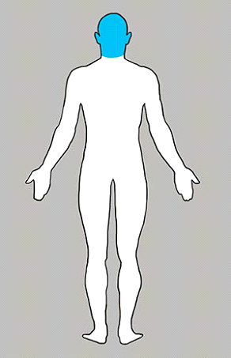 |
Най-честото становище, което потвърждават експертите, е, че всички
главоболия са свързани с претоварване и стрес. Ако денят ти е
прекалено наситен с работа или някои скокове в емоционалния фон,
главоболието може да бъде причинено от тези фактори.
|
|
Вратът - това е мястото, което носи тежестта на вината и
самоунижението на човек. Ако страдате от болки във врата, може да
се самоосъждате прекалено сурово или не можете да си простите за
някое ваше действие. Простете на себе си и поискайте прошка от
онзи, за когото се чувствате виновен, може да бъде най-доброто
"лекарство".
|
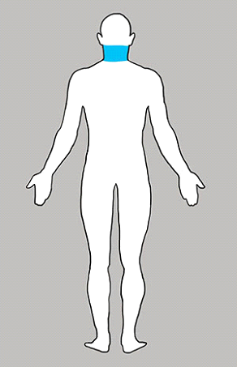 |
| 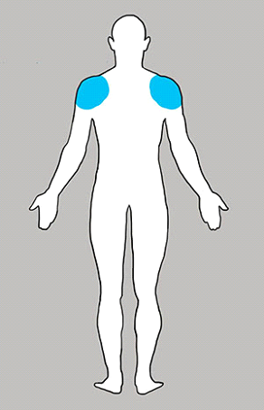 |
Това е мястото за тежест в живота. Болките се появяват, когато
имате прекомерно претоварване с грижи и задължения.
|
|
Горната част на гърба е отговорна за любовта, която очаквате и
получавате. Ако ви боли, тази част от тялото, то е вероятно, че
получавате по-малко от това което очаквате. Може би тези симптоми
показват, че е време да преосмислите отношенията си с хората,
които обичате.
|
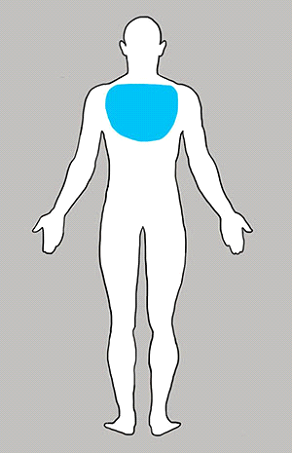 |
| 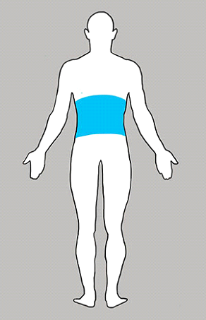 |
Тази част от тялото е пряко свързана с финансовата страна на
живота ви. Ако сте недоволни от финансовото си положение, ако
чувствате, че получавате по-малко от това което заслужавате или
ако харчите твърде много, и тези мисли не ви дават спокойствие -
това може да повлияе на долната част на гърба.
|
|
Лакти - отражение на нашата твърдост към хората. И ако имате болки
в тази част на тялото, тогава може би сте прекалено безкомпромисен
към другите. Опитайте се да преосмислите своите строги критерии за
комуникация, и може би болката ще отмине.
|
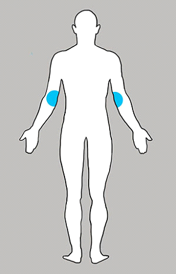 |
| 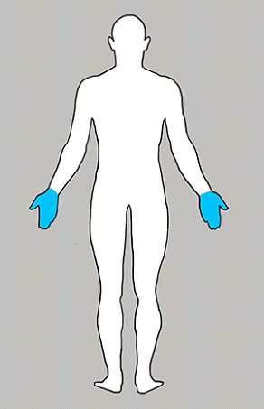 |
Ръката - връзка с външния свят. Ако имате дискомфорт и проблеми с
ръцете, то тогава е възможно вие да не разполагате с достатъчно
комуникация. Опитайте се да поканите колегите за вечеря или се
срещнете с нови съседи. Проблемът може да бъде решен.
|
|
Проблеми с бедрата, болка, слабост, дискомфорт - е олицетворение
на човешкото нежелание да се движим напред. За да се отървете от
някакви проблеми с бедрата си, подхождайте смело към бъдещето
което идва. Не се страхувайте от промяната в начина на живот!
|
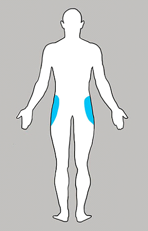 |
| 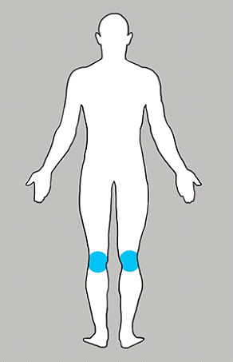 |
Коленете - това е нашето его. Ако сте напомпани със самочувствие,
може да имате проблеми с коленете. За да се отървете от болката на
това място, трябва да се обърне внимание на самочувствието и
самоуважението. Може би те са твърде високи, или напротив, може да
не получавате заслужената похвала и уважение.
|
|
Болки в тези мускули са показател, който говори за недоволство и
завист. За да се отървете от болката в мускулите на прасеца, не
трупайте и не събирайте злина и завист към другите хора.
|
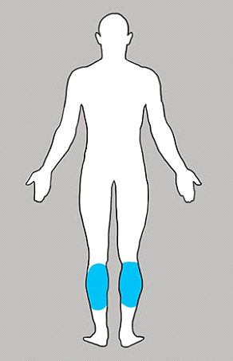 |
| 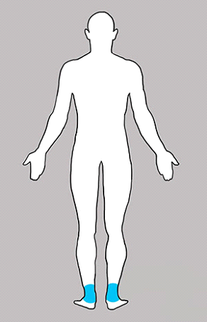 |
Глезените са отговорни за способността ни да получаваме
удоволствие. Ако сте прекалено аскетични и се лишавате от
заслужените награди и удоволствия, може да имате проблеми с
глезените.
|
|
Твърде много негативизъм, като събития и мисли в живота ви, могат
да доведат до проблеми с ходилата. В случай че имате проблем,
трябва да се научите да се впуснете и да се насладите на малките
неща в живота. В крайна сметка, животът е наистина красив
|
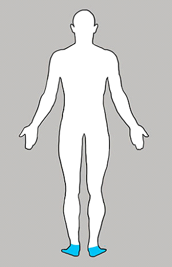 |
Симо Георгиев Александров, 12в, 22/01/2020